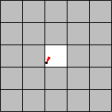
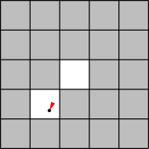
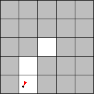
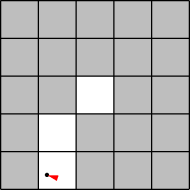
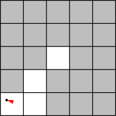

iRobot is a company (started by MIT alumni and faculty) that sells the Roomba vacuuming robot (watch one of the product videos to see these robots in action). Roomba robots move around the floor, cleaning the area they pass over.
In this problem set, you will code a simulation to compare how much time a group of Roomba-like robots will take to clean the floor of a room using two different strategies.
The following simplified model of a single robot moving in a square 5x5 room should give you some intuition about the system we are simulating.
The robot starts out at some random position in the room, and with a random direction of motion. The illustrations below show the robot’s position (indicated by a black dot) as well as its direction (indicated by the direction of the red arrowhead).
|  |  |  |
| Time t = 0 | t = 1 | t = 2 |
| The robot starts at the position (2.1, 2.2) with an angle of 205 degrees (measured clockwise from “north”). The tile that it is on is now clean. | The robot has moved 1 unit in the direction it was facing, to the position (1.7, 1.3), cleaning another tile. | The robot has moved 1 unit in the same direction (205 degrees from north), to the position (1.2, 0.4), cleaning another tile. |
|  |  | |
| t = 3 | t = 4 | |
| The robot could not have moved another unit in the same direction without hitting the wall, so instead it turns to face in a new, random direction, 287 degrees. | The robot moves along its new direction to the position (0.3, 0.7), cleaning another tile. |
Here are additional details about the simulation model. Read these carefully.
Each robot has a position inside the room. We’ll represent the position using coordinates (x, y) which are floats satisfying 0 ≤ x < w and 0 ≤ y < h. In our program we’ll use instances of the Position class to store these coordinates.
A robot has a direction of motion. We’ll represent the direction using an integer d satisfying 0 ≤ d < 360, which gives an angle in degrees.
All robots move at the same speed s, a float, which is given and is constant throughout the simulation. Every time-step, a robot moves in its direction of motion by s units.
If a robot detects that it will hit the wall within the time-step, that time step is instead spent picking a new direction at random. The robot will attempt to move in that direction on the next time step, until it reaches another wall.
Written with StackEdit.